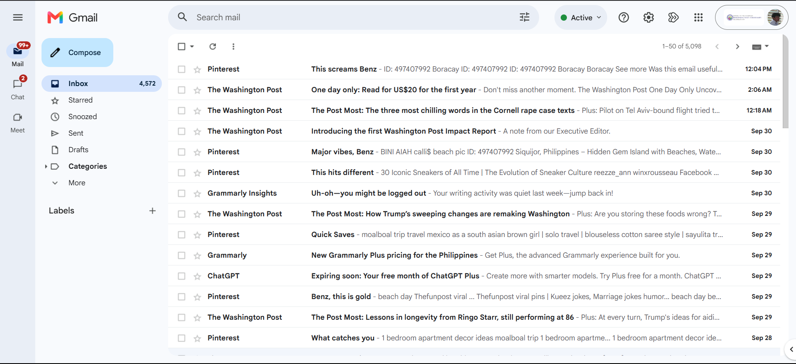
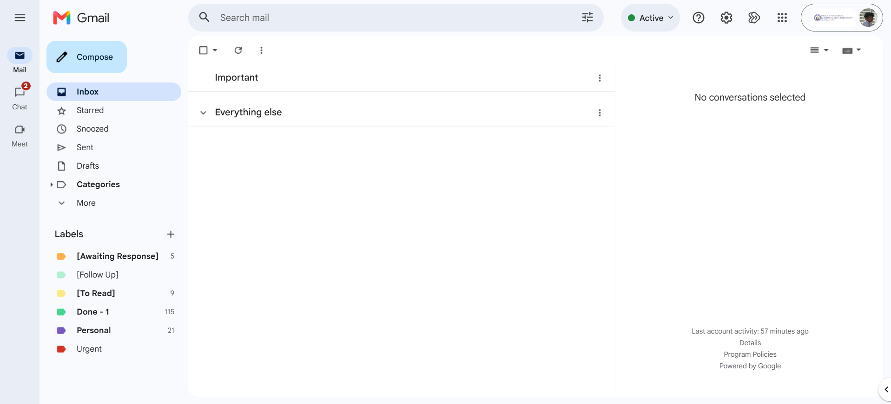

Back to Home
Admin & Productivity
Spreadsheets, dashboard, and presentations. I can help with data entry, email and calendar management, file organization, and research.
Email Management & Inbox Zero Overhaul
Practice Project
Before

After
- Challenge:
- An overflowing inbox buried in promotional noise and unorganized threads.
- Solution:
- Deleted promotional and unnecessary emails, then created custom labels to organize the remaining messages.
- Result:
- A clean, categorized Inbox Zero, so future emails are easy to find and manage.